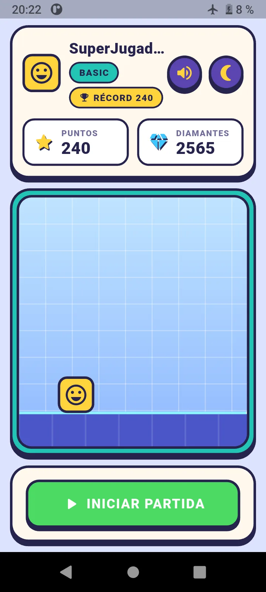
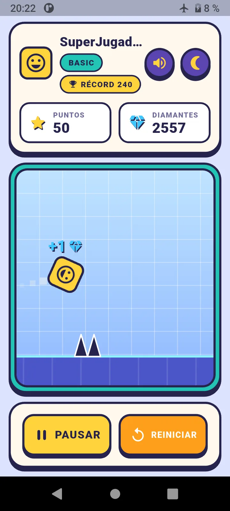
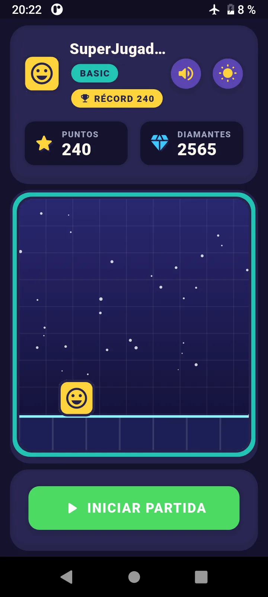
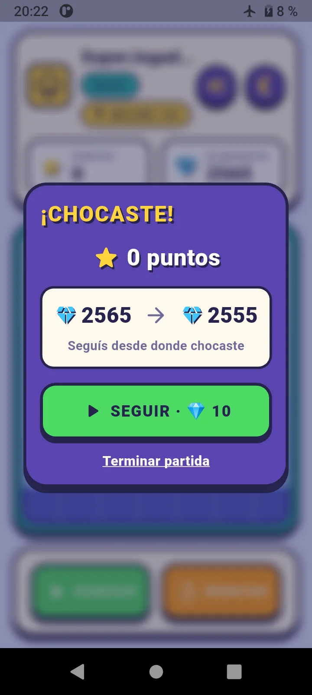
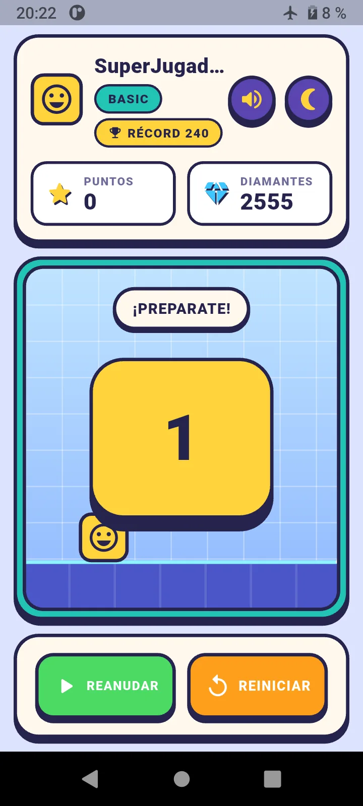
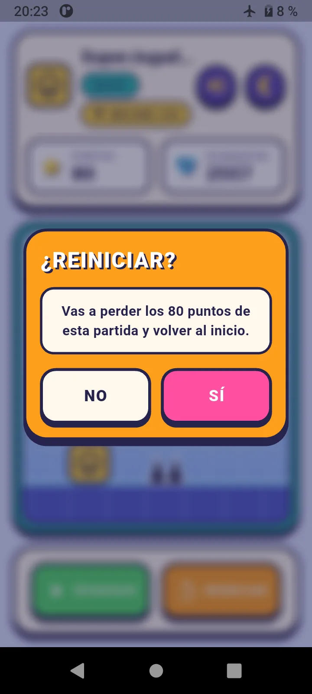
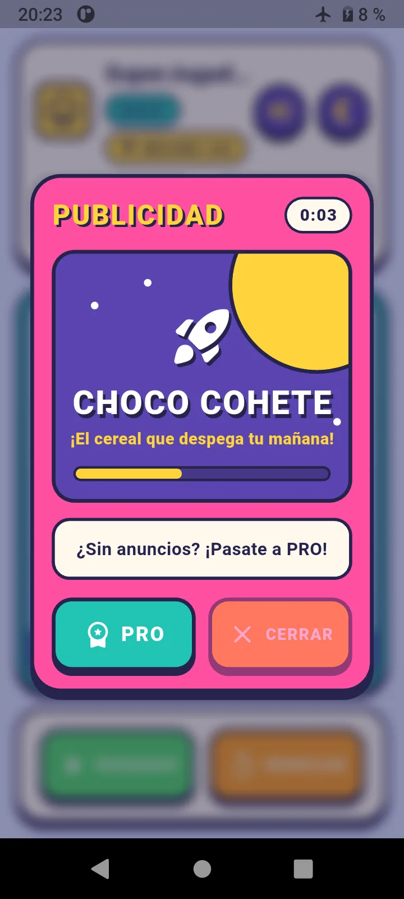
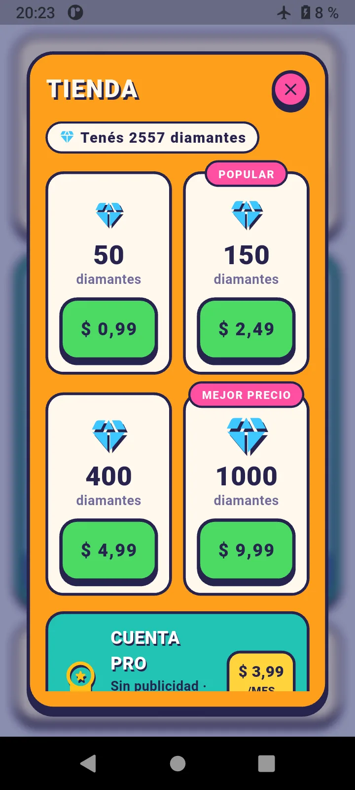
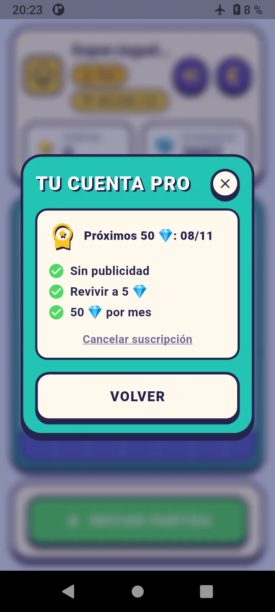
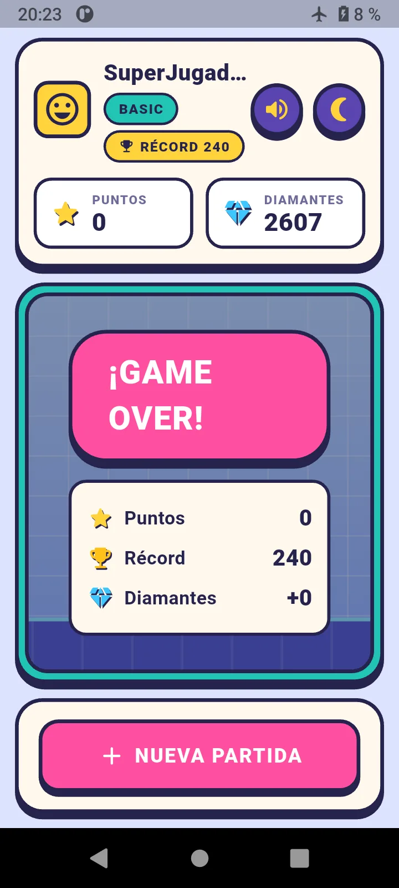

Mobile · Flutter · Facultad
Juego de plataformas estilo runner hecho en Flutter: saltá los obstáculos, sumá puntos y juntá diamantes. Se puede jugar directo desde el navegador.



Una app de juego desarrollada en Flutter para una materia de la facultad, inspirada en Geometry Dash: el jugador controla un cubo que avanza solo y tiene que saltar en el momento justo para esquivar los pinchos. Cada obstáculo superado suma puntos y en el camino se juntan diamantes, la moneda del juego.
Además del juego en sí, la app incluye todo lo que rodea a un juego mobile real: perfil del jugador, récord, una economía de diamantes, publicidad, tienda y una cuenta PRO por suscripción.
Desde la pantalla principal se arranca con "Iniciar partida". El cubo avanza solo y hay que tocar la pantalla (o hacer clic, en la versión web) para saltar los pinchos. Si chocás, podés gastar diamantes para seguir o terminar la partida; al final se muestran los puntos, el récord y los diamantes ganados.






